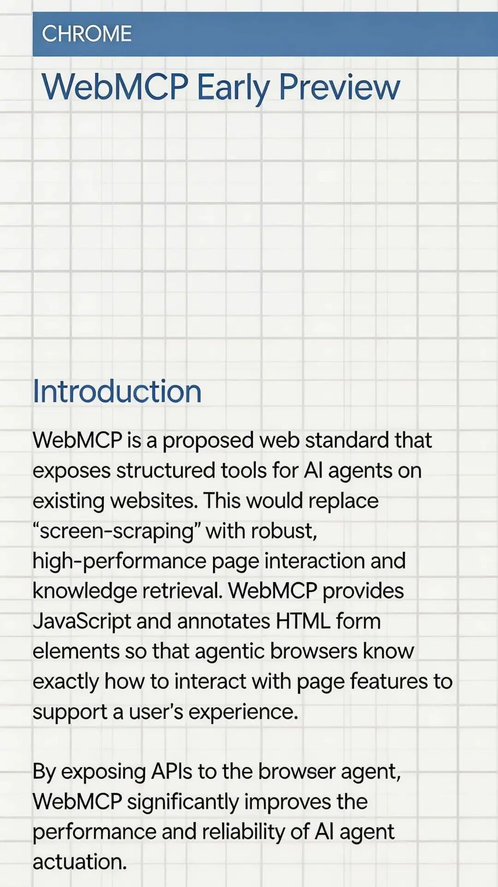
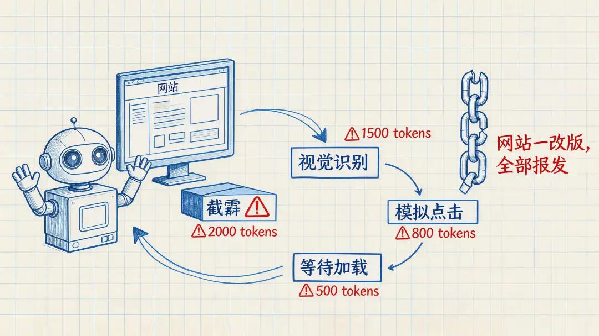
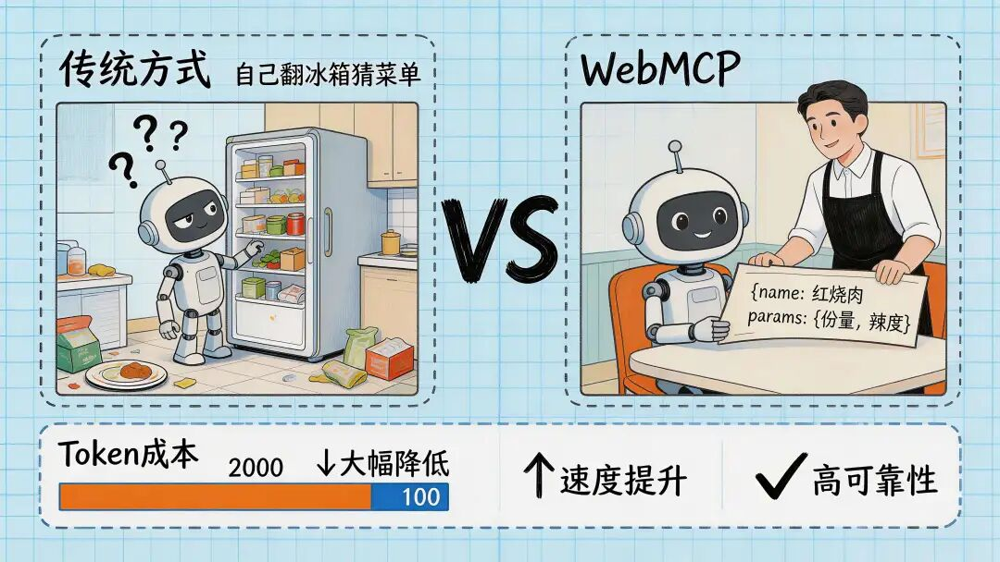
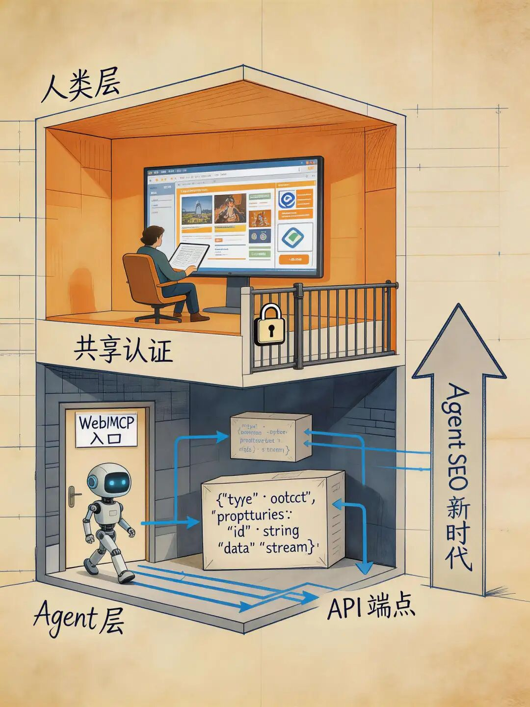

搞技术这些年，真正让我觉得「范式要变了」的时刻不多。WebMCP 算一个。
先说结论
Google 在 Chrome 146 里塞了个叫 WebMCP 的东西，目前还藏在 flag 后面，要手动开启。
这玩意儿做的事情用一句话概括：让网站主动告诉 AI Agent「我能干啥」，而不是让 Agent 像个瞎子一样截屏猜。
开发者 Alex Volkov 给了个精准的比喻——「UI 里的 API」。我觉得这五个字基本说透了。
现在的 Agent 有多蠢

你们有没有用过 Browser Use、Operator 这类浏览器 Agent？
体验大概是这样的：你让它帮你在某个网站搜个东西，它先截个屏，然后用视觉模型识别「搜索框在哪」，再模拟鼠标点进去，敲上关键词，点搜索按钮，等页面加载完再截一屏……
整个过程跟你教你爸妈用电脑差不多——不，可能还不如。至少你爸妈不用每次操作都先给屏幕拍张照。
这套「截屏-识别-点击」的路子，问题太多了：
贵。处理一张截图动辄上千 token，就为了「看懂」页面上有啥。一个简单的搜索操作，来回几轮截屏加 DOM 解析，token 就烧出去了。
慢。截屏、发给模型、等推理、再操作，每一步都有延迟。人手动操作 3 秒搞定的事，Agent 可能折腾半分钟。
脆弱得要命。网站改个版、换个布局，Agent 立马抓瞎。你辛辛苦苦调好的 workflow，一夜之间全废。这不叫自动化，这叫花式给自己找麻烦。
本质上，现在的浏览器 Agent 就是在模拟人类用户——而且是模拟得很拙劣的那种。
WebMCP 换了个思路
WebMCP 的想法很简单，但确实是个思路上的跳跃：
别让 Agent 猜了，让网站直接把自己的能力清单亮出来。

打个比方。以前的方式相当于你走进一家餐厅，没有菜单，你得自己去厨房翻冰箱，看看有啥食材，然后猜这家店能做啥菜。WebMCP 就是给你递了一份结构化的菜单，上面清清楚楚写着：红烧肉，参数是份量和辣度；宫保鸡丁，必填参数是花生要不要。
技术上，它给开发者提供了两条路径。
命令式：JavaScript 硬编码
通过 navigator.modelContext.registerTool() 注册工具函数。比方说一个电商站，可以注册一个 search_products 工具：
navigator.modelContext.registerTool({
name: "search_products",
description: "搜索商品",
inputSchema: {
type: "object",
properties: {
keyword: { type: "string", description: "搜索关键词" },
category: { type: "string", description: "商品分类" }
},
required: ["keyword"]
},
execute({ keyword, category }) {
// 调用已有的搜索逻辑
returnsearchProducts(keyword, category);
}
});Agent 发现这个工具后，直接传参调用，拿到结构化的 JSON 结果。不截屏、不解析 DOM、不模拟鼠标。干净利落。
声明式：给 HTML 表单打标签
更轻量的方式——直接在现有的 HTML 表单上加几个属性：
<form action="/todos" method="post"
tool-name="add-todo"
tool-description="添加一条待办事项">
<input type="text" name="description" required
tool-prop-description="待办事项内容">
<button type="submit">添加</button>
</form>这种方式几乎零成本接入。你原来的表单不用改，加几个自定义属性就行。适合那些不想大动干戈的中小网站。
两种方式可以混着用。核心业务逻辑用命令式精细控制，简单的表单交互用声明式快速搞定。
省 token？省得有点夸张
这可能是最实际的好处。
实测数据：WebMCP 的结构化调用相比截屏式交互，token 消耗最多能省 89%。
算一笔账：以前处理一张截图，光是把图片编码发给模型就得 2000 个 token，模型看完还得再花 token 来理解页面结构、定位元素。现在一个 JSON 响应，20 到 100 个 token 搞定。
而且还有个容易被忽略的点——不需要验证结果。以前 Agent 操作完，得再截一屏确认「刚才那个按钮到底点没点上」。现在工具函数直接返回执行结果，省掉了整个验证环节。
这对搞 Agent 产品的团队来说，成本结构直接变了。
微软和 Google 居然撞车了
有意思的是，WebMCP 不是 Google 一家的活儿。
微软 Edge 团队之前独立搞了个「Web Model Context」方案，Chrome 团队也有个「Script Tools」提案。两边一碰头，发现思路基本一样，索性在 W3C Web Machine Learning 社区组下合并成了一个统一提案。
微软 Edge 平台的产品经理 Kyle Pflug 是这么说的：
WebMCP 让网页暴露 MCP 工具给 Agent，类似传统 MCP 服务器的功能，但不需要跑个单独的服务器。对「人在回路」的场景天然适配——运行在浏览器的 browsing context 里，认证和状态管理都简化了。
翻译成人话：网页自己就是 MCP 服务器，但不用你真的去部署一个服务器。 前端仔直接在浏览器里用熟悉的 JavaScript 就能搞定，不用再切到 Python 或者 Node 去写后端服务。
这事儿最关键的一点是：微软和 Google 这俩平时在浏览器市场掐得你死我活的对手，在这个方向上竟然达成了共识。说明大家都看到了同一个趋势。
认证的问题，其实没问题
你可能第一反应是：认证怎么搞？Agent 调用工具的时候，权限从哪来？
答案出乎意料地简单：继承浏览器现有的会话。
WebMCP 运行在浏览器的 browsing context 里，天然共享用户当前的登录态和浏览器的同源安全模型。Agent 调用工具的权限，跟用户手动操作完全一致。不需要额外搞 OAuth，不需要分发 API Key。
这比传统的服务端 MCP 方案优雅太多了。以前搞过 MCP 服务器的同学应该深有体会——光是认证和权限这块就够喝一壶的。
当然，Kyle Pflug 也补充说，WebMCP 和传统 MCP 服务器不是替代关系。WebMCP 适合有人在场的浏览器场景，传统 MCP 适合无头的服务端场景。很多网站可能会两者并用。
设计哲学：Agent 是助手，不是主人
WebMCP 有一条很清晰的设计红线：它是为「用户坐在浏览器前，Agent 在旁边帮忙」这个场景设计的。
几个关键约束：
网页的人类界面仍然是主体，WebMCP 不替代 UI。用户对 Agent 的操作始终可见可控。不支持无头浏览器场景，不支持完全自主的 Agent。
说白了，这不是要让 AI 接管你的浏览器，而是给你配一个懂行的副驾驶。你还是在开车，它帮你查路况、调导航。
这个定位很务实。从安全角度看，也避免了一堆糟心的问题——比如 Agent 在你不知情的情况下乱操作，或者被恶意网站利用。
两层 Web 的时代要来了

往远了想，当主流浏览器原生支持这种结构化的 Agent 交互，Web 的架构可能要分出两层：
人类层：视觉化、品牌化、讲故事——继续你的花里胡哨的设计。
Agent 层：结构化、Schema 驱动、快速响应——给 AI 看的「机器菜单」。
这跟当年 SEO 的演化路径很像。最早大家觉得网站只要给人看就行了，后来发现搜索引擎也是「用户」，于是诞生了整个 SEO 行业。
现在，Agent SEO 这个词可能要冒出来了：你的网站对 AI Agent 友不友好，可能成为新的竞争维度。那些不暴露 WebMCP 工具的网站，就像当年不做 SEO 的网站一样——搜索引擎找不到你，Agent 也发现不了你。
冷静一下
最后泼点冷水。
WebMCP 目前还处于非常早期的阶段。Chrome 146 里的实现得手动开 flag，API 设计还在反复迭代，生态基本为零。距离真正大规模落地，至少还有一段不短的路要走。
但方向已经很清楚了。浏览器不再只是人类的工具——它正在同时变成 AI Agent 的操作系统。
如果你是做 Agent 产品的，建议现在就开始关注 WebMCP 的进展。如果你是前端开发者，可以考虑在新项目里预留 WebMCP 的接口设计。别等到标准落地了才开始跟进，那时候黄花菜都凉了。
相关链接：
• Chrome 开发者文档：https://developer.chrome.com/docs/ai/join-epp • W3C WebMCP 提案：https://github.com/webmachinelearning/webmcp • The New Stack 深度报道：https://thenewstack.io/how-webmcp-lets-developers-control-ai-agents-with-javascript/ • Patrick Brosset 博文：https://patrickbrosset.com/articles/2025-08-28-ai-agents-and-the-web-a-proposal-to-keep-developers-in-the-loop/
我是 AIGC 胶囊，谢谢你读我的文章。
如果觉得不错，随手点个赞、在看、转发三连吧 🙂
如果想第一时间收到推送，也可以给我个星标 ⭐